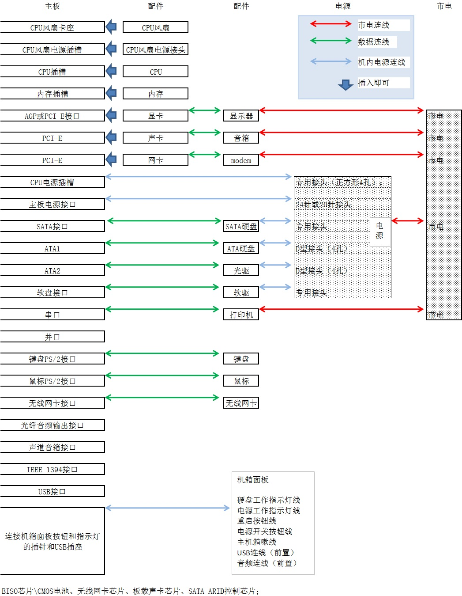

常言道“工欲善其事，必先利其器”，没有顺手的工具，装机也会变得麻烦起来，那么哪些工具是装机之前需要准备的呢？（如图，从左至右为“尖嘴钳、散热膏、十字解刀、平口解刀”）
①十字解刀：十字解刀又称螺丝刀、螺丝起子或改锥，用于拆卸和安装螺钉的工具。由于计算机上的螺钉全部都是十字形的，所以你只要准备一把十字螺丝刀就可以了。那么为什么要准备磁性的螺丝刀呢？这是因为计算机器件按装后空隙较小，一旦螺钉掉落在其中想取出来就很麻烦了。另外，磁性螺丝刀还可以吸住螺钉，在安装时非常方便，因此计算机用螺丝刀多数都具有永磁性的。
②平口解刀：平口解刀又称一字型解刀。如何需要你也可准备一把平口解刀，不仅可方便安装，而且可用来拆开产品包装盒、包装封条等。
③镊子：你还应准备一把大号的医用镊子，它可以用来夹取螺钉、跳线帽及其它的一些小零碎动西。
④钳子：钳子在安装电脑时用处不是很大，但对于一些质量较差的机箱来讲，钳子也会派上用场。它可以用来拆断机箱后面的挡板。这些挡板按理应用手来回折几次就会断裂脱落，但如果机箱钢板的材质太硬，那就需要钳子来帮忙了。
建议：最好准备一把尖嘴钳，它可夹可钳，这样还可省却镊子。
⑤散热膏：在安装高频率CPU时散热膏（硅脂）必不可少，大家可购买优质散热膏（硅脂）备用。
①准备好装机所用的配件：CPU、主板、内存、显卡、硬盘、软驱、光驱、机箱电源、键盘鼠标、显示器、各种数据线/电源线等。
②电源排型插座：由于计算机系统不只一个设备需要供电，所以一定要准备万用多孔型插座一个，以方便测试机器时使用。
③器皿：计算机在安装和拆卸的过程中有许多螺丝钉及一些小零件需要随时取用，所以应该准备一个小器皿，用来盛装这些动西，以防止丢失。
④工作台：为了方便进行安装，你应该有一个高度适中的工作台，无论是专用的电脑桌还是普通的桌子，只要能够满足你的使用需求就可以了。
①防止静电：由于我们穿着的衣物会相互摩擦，很容易产生静电，而这些静电则可能将集成电路内部击穿造成设备损坏，这是非常危险的。
②防止液体进入计算机内部：在安装计算机元器件时，也要严禁液体进入计算机内部的板卡上。因为这些液体都可能造成短路而使器件损坏，所以要注意不要将你喝的饮料摆放在机器附近，对于爱出汗的朋友来说，也要避免头上的汗水滴落，还要注意不要让手心的汗沾湿板卡。
③使用正常的安装方法，不可粗暴安装：在安装的过程中一定要注意正确的安装方法，对于不懂不会的地方要仔细查阅说明书，不要强行安装，稍微用力不当就可能使引脚折断或变形。对于安装后位置不到位的设备不要强行使用螺丝钉固定，因为这样容易使板卡变形，日后易发生断裂或接触不良的情况。
④把所有零件从盒子里拿出来（不过还不要从防静电袋子中拿出来），按照安装顺序排好，看看说明书，有没有特殊的安装需求。准备工作做得越好，接下来的工作就会越轻松。
⑤以主板为中心，把所有东西排好。在主板装进机箱前，先装上处理器与内存；要不然过后会很难装，搞不好还会伤到主板。此外在装AGP与PCI卡时，要确定其安装牢不牢固，因为很多时候，你上螺丝时，卡会跟着翘起来。如果撞到机箱，松脱的卡会造成运作不正常，甚至损坏。
⑥测试前，建议你只装必要的组件——主板、处理器、散热片与风扇、硬盘、一台光驱、以及显卡。其它东西如DVD、声卡、网卡等等，再确定没问题的时候再装。此外第一次安装好后把机箱关上，但不要锁上螺丝，因为如果哪儿没装好你还会开开关关好几次。
大家在将主板装进机箱前最好先将CPU和内存安装好，以免将主板安装好后机箱内狭窄的空间影响CPU等的顺利安装。
第一步，稍向外/向上用力拉开CPU插座上的锁杆与插座呈90度角，以便让CPU能够插入处理器插座。
第二步，然后将CPU上针脚有缺针的部位对准插座上的缺口。
第三步，CPU只能够在方向正确时才能够被插入插座中，然后按下锁杆。（安装好后的CPU）
第四步，在CPU的核心上均匀涂上足够的散热膏（硅脂）。但要注意不要涂得太多，只要均匀的涂上薄薄一层即可。
提示：一定要在CPU上涂散热膏或加块散热垫。这有助于将废热由处理器传导至散热装置上。没有在处理器上使用导热介质会导致当机甚至烧毁CPU！此外，无论散热装置的接触面有任何细微的偏差，甚或只是一小点的灰尘，都会导致无法有效的将废热从处理器传导出来。散热膏同时在CPU的接触面上（就是印模）也充满了极微小的散热孔道。一些散热装置的制造商会在其产品中附有散热膏，如果你的没有，在大多数计算机或电子零件商店都会有卖，价格大约5元。
CPU的安装一般很简单，但CPU风扇的安装较复杂，其步骤如下：
第一步，首先在主板上找到CPU和它的支撑机构的位置，然后安装好CPU。
第二步，接着将散热片妥善定位在支撑机构上；
第三步，再将散热风扇安装在散热片的顶部——向下压风扇直到它的四个卡子鍥入支撑机构对应的孔中；
第四步，再将两个压杆压下以固定风扇，需要注意的是每个压杆都只能沿一个方向压下；
第五步，最后一步，最后将CPU风扇的电源线接到主板上3针的CPU风扇电源接头上即可。
小知识：
跳线与DIP开关——现在几乎所有主板都是自动识别CPU以及设置电压的，但为了以防万一，最好在安装前先阅读主板说明书，看相关CPU安装的细节，确定是否需要进行跳线设置。跳线其实就是一个开关，它通过跳线帽来控制开关的闭合，从而达到主板以些部件功能的通断及一些特殊功能的实现（跳线和跳线说明文字）。跳线主要是用来设定硬件的工作状态，譬如CPU的内核电压、“外频”和“倍频”，主板的资源分配以及启用/关闭某些主板功能等。跳线赋予了主板更为灵活地设置方式，使用户能够随心所欲地对主板上各部件的工作方式进行设置。但是随着大量硬件参数设置在BIOS中得以完成，主板上的跳线已经较486、586时代大大减少了。而DIP开关则是一组组合开关（DIP开关），通常可控制CPU的倍频和外频，不过现在CPU的倍频一般都锁定，所以只有外频调整。此外尽管跳线已经使硬件设置非常灵活，但是跳线的插拔方式毕竟使用起来不太方便。为此，DIP开关开始出现在主板上，使用DIP开关，我们可更为直观和容易地设置硬件的工作状态。
现在常用的内存有168线的SDRAM内存和184线的DDR SDRAM内存两种，其主要外观区别在于SDRAM内存金手指上有两个缺口，而DDR SDRAM内存只有一个。
下面我们就以184线的DDR SDRAM内存安装为例给你讲解。
第一步，安装内存前先要将内存插槽两端的白色卡子向两边扳动，将其打开，这样才能将内存插入。然后再插入内存条，内存条的1个凹槽必须直线对准内存插槽上的1个凸点（隔断）。
第二步，再向下按入内存，在按的时候需要稍稍用力。
第三步，以使紧压内存的两个白色的固定杆确保内存条被固定住，即完成内存的安装。
提示：SDRAM内存的安装和DDR内存的安装基本一样。差别在于SDRAM内存及其插槽上有两个对应缺口。内存的两端各有一个缺口，其正好和内存插槽两端的白色卡子对应，如果内存插到位，该卡子会卡在内存的缺口中。如果内存插到底，两端的卡子还是不能自动合拢，你可用手将其扳到位。
一般情况下，我们在购买机箱的时侯可以买已装好了电源的。不过，有时机箱自带的电源品质太差，或者不能满足特定要求，则需要更换电源。由于电脑中的各个配件基本上都已模块化，因此更换起来很容易，电源也不例外，下面，我们就来看看如何安装电源：
安装电源很简单，先将电源放进机箱上的电源位，并将电源上的螺丝固定孔与机箱上的固定孔对正。然后再先拧上一颗螺钉（固定住电源即可），然后将最后3颗螺钉孔对正位置，再拧上剩下的螺钉即可。
需要注意的是，在安装电源时，首先要做的就是将电源放入机箱内，这个过程中要注意电源放入的方向，有些电源有两个风扇，或者有一个排风口，则其中一个风扇或排风口应对着主板，放入后稍稍调整，让电源上的4个螺钉和机箱上的固定孔分别对齐。
小知识：
ATX电源提供多组插头，其中主要是20芯的主板插头、4芯的驱动器插头和4芯的小驱动器专用插头。20芯的主板插头只有一个且具有方向性，可以有效地防止误插，插头上还带有固定装置可以钩住主板上的插座，不至于让接头松动导致主板在工作状态下突然断电。四芯的驱动器电源插头用处最广泛，所有的CD-ROM、DVD-ROM、CD-RW、硬盘甚至部分风扇都要用动它。四芯插头提供了+12V和+5V两组电压，一般黄色电线代表+12V电源，红色电线代表+5V电源，黑色电线代表OV地线。这种四芯插头电源提供的数量是最多的，如果用户觉得还不够用，可以使用一转二的转接线。四芯小驱动器专用插头原理和普通四芯插头是一样的，只是接口形式不同罢了，是专为传统的小驱供电设计的。
在主板上装好CPU和内存后，我们即可将主板装入机箱中。
在安装主板前我们先来认识一下机箱（上图），大家知道，机箱的整个机架由金属组成。其5寸固定架，可以安装几个设备，比如光驱等；3寸固定架，是来固定小软驱、3寸硬盘等；电源固定架，是用来固定电源。而机箱下部那块大的铁板用来固定主板，我们在此称之为底板，上面的很多固定孔是用来上铜柱或塑料钉来固定主板的，现在的机箱在出厂时一般就已经将固定柱安装好。而机箱背部的槽口是用来固定板卡及打印口和鼠标口的，在机箱的四面还有四个塑料脚垫。不同的机箱固定主板的方法不一样，像我们正在安装的这种，它全部采用螺钉固定，稳固程度很高，但要求各个螺钉的位置必须精确。主板上一般有5个到7个固定孔，你要选择合适的孔与主板匹配，选好以后，把固定螺钉旋紧在底板上，（现在的大多机箱已经安装了固定柱，而且位置都是正确的，不用我们再单独安装了）。然后把主板小心地放在上面，注意将主板上的键盘口、鼠标口、串并口等和机箱背面挡片的孔对齐，使所有螺钉对准主板的固定孔，依次把每个螺丝安装好。总之，要求主板与底板平行，决不能碰在一起，否则容易造成短路。
第一步，首先将机箱或主板附带的固定主板用的镙丝柱和塑料钉旋入主板和机箱的对应位置；
第二步，然后再将机箱上的I/O接口的密封片撬掉。提示：你可根据主板接口情况，将机箱后相应位置的挡板去掉。这些挡板与机箱是直接连接在一起的，需要先用螺丝刀将其顶开，然后用尖嘴钳将其扳下。外加插卡位置的挡板可根据需要决定，而不要将所有的挡板都取下；
第三步，然后将主板对准I/O接口放入机箱；
第四步，最后，将主板固定孔对准镙丝柱和塑料钉，然后用螺丝将主板固定好；
第五步，将电源插头插入主板上的相应插口中。这是ATX主板上普遍具备的ATX电源接口，你只需将电源上同样外观的插头插入该接口既可完成对ATX电源的连接。上图是P4主板和电源中独具的电源接头，你可一一对应插好。
在安装主板时，许多读者的难点不是将主板放入机箱中，并固定好，而是机箱连接线该怎么用！下面就让我们先来了解一下机箱连接线——
①PC喇叭的四芯插头，实际上只有1、4两根线，一线通常为红色，它是接在主板Speaker插针上。这在主板上有标记，通常为Speaker。在连接时，注意红线对应1的位置（注：红线对应1的位置——有的主板将正极标为“1”有的标为“+”，适情况而定）。
②RESET接头连着机箱的RESET键，它要接到主板上RESET插针上。主板上RESET针的作用是这样的：当它们短路时，电脑就重新启动。RESET键是一个开关，按下它时产生短路，手松开时又恢复开路，瞬间的短路就使电脑重新启动。偶尔会又这样的情况，当你按一下RESET键并松开，但它并没有弹起，一直保持着短路状态，电脑就不停地重新启动。
③ATX结构的机箱上有一个总电源的开关接线，是个两芯的插头，它和Reset的接头一样，按下时短路，松开时开路，按一下，电脑的总电源就被接通了，再按一下就关闭，但是你还可以在BIOS里设置为开机时必须按电源开关四秒钟以上才会关机，或者根本就不能按开关来关机而只能**软件关机。
④这个三芯插头是电源指示灯的接线，使用1、3位，1线通常为绿色。在主板上，插针通常标记为Power，连接时注意绿色线对应于第一针（+）。当它连接好后，电脑一打开，电源灯就一直亮着，指示电源已经打开了。
⑤硬盘指示灯的两芯接头，一线为红色。在主板上，这样的插针通常标着IDE LED或HD LED的字样，连接时要红线对一。这条线接好后，当电脑在读写硬盘时，机箱上的硬盘的灯会亮。有一点要说明，这个指示灯只能指示IDE硬盘，对SCSI硬盘是不行的。
接下来我们还需将机箱上的电源，硬盘，喇叭，复位等控制连接端子线插入主板上的相应插针上。连接这些指示灯线和开关线是比较繁琐的，因为不同的主板在插针的定义上是不同的，究竟哪几根是用来插接指示灯的，哪几根是用来插接开关的都需要查阅主板说明白书才能清楚，所以我们建议你最好在将主板放入机箱前就将这些线连接好。另外主板的电源开关、RESET（复位开关）这几种设备是不分方向的，只要弄清插针就可以插好。而HDD LED（硬盘灯）、POWER LED（电源指示灯）等，由于使用的是发光二极管，所以插反是不能闪亮的，一定要仔细核对说明书上对该插针正负极的定义。（连好后的前面板线）
外部存储设备包含硬盘、光驱（CD-ROM、DVD-ROM、CDRW）等等。
（1）安装外部存储设备时的基础知识
①每个IDE口都可以有（而且最多只能有）一个“Master”（主盘，用于引导系统）盘。
②当两个IDE口上都连接有设置为“Master”时，老主板通常总是尝试从第一个IDE口上的“主”盘启动。而现在的主板，一般都可以通过CMOS的设置，指定哪一个IDE口上的硬盘是启动盘。
③ATX电源在关机状态时仍保持5V电流，所以在进行零配件安装、拆卸及外部电缆线插、拔时必须关闭电源接线板开关或拔下机箱电源线。
④有些机箱的驱动器托架安排得过于紧凑，而且与机箱电源的位置非常**近，安装多个驱动器时比较费劲。所以我们建议先在机箱中安装好所有驱动器，然后再进行线路连接工作，以免先安装的驱动器连线挡住安装下一个驱动器所需的空间。
⑤为了避免因驱动器的震动造成的存取失败或驱动器损坏，建议在安装驱动器时在托架上安装并固定所有的螺丝。
⑥为了方便安装及避免机箱内的连接线过于杂乱无章，在机箱上安装硬盘、光驱时，连接与同一IDE口的设备应该相邻。
⑦电源线的安装是有方向的，反了插不上。
⑧考虑到以后可能需要安装多个硬盘或光驱，攒机前最好准备两条IDE设备信号线（俗称“排线”），每条线带3个接口（一个连接主板IDE端口，另外两个用来连接硬盘或光驱）。为了避免机箱内的连接线过于杂乱无章，“排线”上用于连接硬盘/光驱的接口应尽量与主板接口之间的“排线”长度应为2：1。
⑨在同一个排线IDE口上连接两个设备时，一般的原则是传输速度相近的安装在一起，硬盘和光驱应尽量避免安装在同一个IDE口上。
小知识：
主盘（MASTER）与从盘（SLAVE）——在一台计算机里一般只有两个IDE接口，每一根接线有三个接口，其中一个接主板的IDE接口，另两个则可以接两个硬盘或一个硬盘与一个光驱。在同一根接线上如果接两个IDE接口设备，则其中一个是主盘，另一个为从盘。由于硬盘缺省的跳线设置为主硬盘，所以要将其中一个的跳线设为从盘，否则将无法启动系统。具体的设置可见硬盘后面的跳线设置说明。一般来说，光驱出厂时已设为从盘，所以安装时不必再跳。（硬盘上的跳线及说明文字）
第一步，如果你只用一根IDE线来连接硬盘，那么我们就可以把硬盘放到插槽中去了，单手捏住硬盘（注意手指不要接触硬盘底部的电路板，以防身上的静电损坏硬盘），对准安装插槽后，轻轻地将硬盘往里推，直到硬盘的四个螺丝可以装紧为止。
第二步，一般主板上都有两个IDE插口——IDE1和IDE2，在一般情况下我们都将硬盘连接在IDE口上，而将光驱等设备连接在IDE2口上。此外，IDE口上一般都有一个缺口以用来和IDE硬盘线上的防插反凸块对应以防止插反。
第三步，先将IDE线在硬盘上的IDE口上插好，然后再将其插紧在主板IDE接口中，最后再将ATX电源上的扁平电源线接头在硬盘的电源插头上插好即可。需要注意的是，如果你的IDE线无防插反凸块，你在安装IDE线时需本着以IDE线上有“红线一端对电源接口”的原则来进行安装。
①光驱的跳线：光驱的跳线非常重要，特别是当光驱与硬盘共用一条数据线的时候，如果设置不正确就会无法识别光驱。一般安装一个光驱的时候只需要将它设置为主盘就行了。
②将光驱装入机箱：先拆掉机箱前方的一个5寸固定架面板，然后把光驱滑入。把光驱从机箱前方滑入机箱时要注意光驱的方向，现在的机箱大多数只需要将光驱平推入机箱就行了。但是有些机箱内有轨道，那么在安装光驱的时候就需要安装滑轨。安装滑轨时应注意开孔的位置，并且螺钉要拧紧，滑轨上有前后两组共8个孔位，大多数情况下，**近弹簧片的一对与光驱的前两个孔对齐，当滑轨的弹簧片卡到机箱里，听到“咔”的一声响，光驱就安装完毕。
③固定光驱：在固定光驱时，要用细纹螺钉固定，每个螺钉不要一次拧紧，要留一定的活动空间。如果在上第一颗螺钉的时候就固定死，那么当你上其它3颗螺钉的时候，有可能因为光驱有微小位移而导致光驱上的固定孔和框架上的开孔之间错位，导致螺钉拧不进去，而且容易滑丝。正确的方法是把4颗螺钉都旋入固定位置后，调整一下，最后再拧紧螺钉。
④安装连接线：依次安装好IDE排线和电源线。
许多时候我们需要在一根IDE线上连接两个存储设备，如两个硬盘、两个光驱或一个硬盘一个光驱，这时该怎么来安装呢？
（1）安装双外部存储设备的条件：
①机箱电源能满足新增外部存储设备电源需求
一般机箱中的电源输出功率都在200W以上，按理说加块硬盘应该没问题。但如果你的使用是耗电量大的显卡，另外又加装了DVD等，那么就要考虑电源是否还能再提供12W左右功率去支持一块硬盘。
②尚有空闲的硬盘线插头
现在的电脑主板都能提供2个IDE接口，可接两根双插头的40芯硬盘线（数据线）挂4块IDE兼容设备，按一般的配置两根电缆可接四块诸如硬盘、光驱或ZIP高密软驱等IDE设备。但如果你只有一条40芯数据线，就赶快再买一根预备着。
（2）主、从状态设置和安装：
当以上几个条件都具备后，在安装到机箱中以前还将两块硬盘按自己的意愿分别设置成主盘和从盘，这样安装后才能被系统接纳正常使用。主、从盘的设置可按以下方法进行：
所有的IDE设备包括硬盘都使用一组跳线来确定安装后的主、从状态。硬盘跳线器大多设置在电源联接座和数据线联接插座之间的地方，通常由3组（6或7）针或4组（8或9）针再加一个或两个跳线帽组成。另外在硬盘或光驱正面或反面一定还印有主盘（Master）、从盘（Slave）以及由电缆选择（Cableselect）的跳线方法。
各类硬盘或光驱的跳线方法和标记说明大同小异，所以这里只将希捷硬盘的跳线方法简单介绍如下，对于其它品牌硬盘可以参照进行。以希捷ST33221A为例，硬盘上不但印制了跳线说明而且还标明电源线和硬盘线的正确联接方法。
（3）安装双硬盘时需注意的问题：
如果新增加的硬盘与光驱等设备一起接在第二硬盘线上时，要注意光驱等设备的主、从盘设置不与新加硬盘相冲突，否则也会出现主板检测不到新增硬盘或者找不到原光驱问题。一般情况下硬盘和光驱可以按在机箱中的安装位置就近联接，但考虑不同型号、规格的硬盘以及硬盘与光驱的之间数据传输率不同，所以可根据具体IDE设备的实际情况联接。
显卡、声卡、网卡等插卡式设备的安装大同小异：
在安装显卡前也需注意，显卡都由许多精密的集成电路及其它元器件构成，这些集成电路很容易受到静电影响而损失，所以在安装前做好以下准备。
——请将电脑的电源关闭，并且拔除电源插头。
——拿取显示卡时请尽量必免金属接线部分，且组好能够戴上防静电手套。
——当你将主板中的ATX电源插座上的插头拔除时，请确认电源的开关是关闭状况。
安装显卡主要可分为硬件安装和驱动安装两部分。
硬件安装就是将显卡正确的安装到主板上的显卡插槽中，其需要掌握的要点是要注意AGP插槽的类型（AGP接口的发展经历了AGP1X/2X/PRO/4X/8X等等阶段，其传输速度也从最早的AGP1X的266MHz/S的带宽发展到了AGP8X的2GB/S。AGP1X/AGP2X/AGP4X/AGP Pro等几种显卡插槽都不相同，排在后面的显卡规范插槽一般可以兼容前面的显卡规范插槽，例如AGP4X规范的显卡插槽可以使用AGP2X的显卡，而AGP4X的显卡就不能在AGP2X的显卡插槽上正常使用。）。其次，在安装显卡时一定要关掉电源，并注意要将显卡安装到位。
第一步，从机箱后壳上移除对应AGP插槽上的扩充挡板及螺丝。
第二步、将显卡很小心的对准AGP插槽并且很确实的插入AGP插槽中。注意：务必确认将卡上的金手指的金属触点很确实的与AGP插槽接触在一起。
第三步，用解刀将螺丝锁上使显卡确实的固定在机箱壳上。
第四步，将显示器上的15-pin接脚VGA线插头插在显卡的VGA输出插头上。
最后一步，确认无误后，重新开启电源，即完成显卡的硬件安装。
——主要接口一览：
声卡上有很多接口，下面我们就对其进行一下简单介绍。（以创新SB Live！为例。）
a.游戏杆/MIDI插口：用于连接游戏杆/手柄/方向盘等外界游戏控制器或MIDI键盘/电子琴，你也可先购买一个光纤MIDI套件再来插入上述设备。
b.后置输出插孔：将音频信号输出到有源音箱或功率放大器。
c.线性输出插孔（LINE OUT）：将音频信号输出到有源音箱/耳机或功率放大器。
d.话筒输入插孔（MIC IN）：用于连接话筒，主要用来语音输入。
e.线性输入插孔（LINE IN）：用于将随身听或影碟机等外部设备的声音信号输入电脑。
f.电话应答设备接口（TAD，Telephone Answering Device）：用来提供标准语音MODEM的连接并向MODEM传送话筒信号，所以配合MODEM卡和软件，可使电脑具备电话自动应答功能。
g.模拟CD音频输入接口（CD－IN）：使用CD音源线将来自CD/DVD光驱的模拟音频信号接入。
h.辅助设备接口（AUX－IN）：用于将电视卡，解压卡等设备的声音信号输入声卡并通过音箱播放。
i.数字CD音频输入接口（CD－SPDIF）：用来接收来自光驱的数字音频信号。
j.音频扩展接口（SPDIF－EXT）：接到数字I/O子卡，实现数字信号的输入和输出，并可输出AC-3信号等。
第一步，找到一空余的PCI插槽，并从机箱后壳上移除对应PCI插槽上的扩充挡板及螺丝。
第二步，将声卡小心的对准PCI插槽并且很确实的插入PCI插槽中。
注意：务必确认将卡上的金手指的金属触点很确实的与PCI插槽接触在一起。
第三步，将螺丝用解刀锁上使声卡确实的固定在机箱壳上。
第四步，确认无误后，重新开启电源，既完成声卡的硬件安装。
网卡的安装也很简单：
先确认机箱电源在关闭的状态下，将网卡插入机箱的某个空闲的扩展槽中，插的时候注意要对准插槽；用两只手的大姆指把网卡插入插槽内，一定要把网卡插紧；上好螺钉，并拧紧；最后，将做好的网线上的水晶头连接到网卡的RJ45接口上。
①把显示器侧放：在搬动显示器时，应先观察显示器，一般在显示器的两侧回有一个方便手那的扣槽，用户扣这个扣槽就可以方便地搬动显示器了，我们首先把显示器侧放。
②显示器底部有几个卡口：在显示器的底部有许多小孔，其中就有安装底座的安装孔。此外，你还可看到显示器的底座上有几个突起的塑料弯钩，这几塑料弯钩就是用来固定显示器底部的。
③安装底座：
第一步是将底座上突出的塑料弯钩与显示器底部的小孔对准，要注意插入的方向。
第二步是是将显示器底座按正确的方向插入显示器底部的插孔内。
第三步是用力推动底座。
第四步是听见“咔”的一声响，显示器底座就已固定在显示器上了。
④连接显示器的电源：从附袋里取出电源连接线，将显示器电源连接线的另外一端连接到电源插座上。
⑤连接显示器的信号线：
把显示器后部的信号线与机箱后面的显卡输出端相连接，显卡的输出端是一个15孔的三排插座，厂商在设计插头的时候为了防止插反，将插头的外框设计为梯形，只要将显示器信号线的插头插到上面就行了。如果使用的显卡是主板集成的，那么一般情况下显示器的输出插孔位置是在串口一的下方，如果不能确定，那么请按照说明书上的说明进行安装。
键盘和鼠标是现在PC中最重要的输入设备，必须安装。键盘和鼠标的安装很简单，你只需将其插头对准缺口方向插入主板上的键盘/鼠标插座即可。
现在最常见的是PS/2接口的键盘和鼠标，这两种接口的插头是一样的，很容易弄混淆，所以我们在连接的时候要看清楚。
小知识：
按接口内型，鼠标可以分为串口、PS/2、USB三类，传统的鼠标是串口连接的，它占用了一个串行通讯口。PS/2接口的鼠标是目前市场上的主流产品，USB接口也是一种输入/输出接口，用于连接键盘、鼠标、数码相机等外不设备。USB接口的鼠标是现在的新产品，键盘有PS/2接口，也有USB接口。
提示：键盘后的塑料块可以搬动，使键盘有点角度，便于操作。键盘接口用于连接计算机的输入设备--键盘，接入的是一个五针的圆型插头。连接键盘接口的时候要注意其方向性，即插头上的小舌头一定要对准插孔中的方形孔。
在多媒体电脑中音箱已成为必不可少的放音设备。而随着技术的发展，多声道PC有源音箱日成主流。所以现在的PC音箱大都使用2.1式和4.1式及5.1式的——例如4.1音箱一般由1个低音炮和4个卫星音箱组成，再配上较专业的4.1声卡，你就能获得环绕声较强的音响效果。下面我们就以“漫步者R4.1”音箱为例为你讲讲音箱的连接。
漫步者R4.1由低音炮R401T和4个无源音箱R80NT组成。首先让我们来观察其主音箱（低音炮）的背面，最左端是电源线插座和电源开关，在没有将4个卫星音箱接好之前，电源最好不要开启，首先让我们将卫星音箱和主音箱连接起来。
第一、连接4个卫星音箱：在音箱背部的输出插孔，可以发现“+ R -”、“- L +”等英文字样，它分别代表“右环绕音箱的正负极、左环绕音箱的正负极”2个音箱的连接位置。对于卫星音箱来说，在技术指标上并没有任何区别，换而言之，它们是完全一样的两个产品，之所以能产生两个声道的效果完全是声卡的功效所致。所以，在连接的时候，我们只需要将4个音箱接上就可以了，但是在连接的时候要注意音箱的正负极。连接时要注意线的颜色对应，并不要将两接头之间相碰短路。
第二、连接音源。如果使用的是真正的4声道及以上的音源（声卡），可将音箱“输入方式”选择开关拨到“4声道”一侧，这时组成的是4.1系统，线路输入A口作为左右声道（或称前置声道）输入，线路输入B口作为环绕声道输入。（见图31）而如果使用的是普通立体声（2声道）音源，请将“输入方式”选择开关拨到（2声道）一侧，此时组成的是虚拟4.1系统，环绕音箱放虚拟环绕声，音源可从线路输入A口或B口输入。
第三、放音。插上电源，把主音量调节旋钮调至适当的位置，打开电源开关，根据你的需求来调节低音音量旋钮，即可享受到漫步者R4.1系统的音乐魅力。
提示：放音时请使用适当的音量聆听，因为过大的声音可能会损伤你的听觉系统或破坏音响系统。当音源的输出信号较大时，开大音量，可能会出现失真，所以你可把音源的输出音量和本系统的音量调节到适当的位置。环绕声道的音量也不宜过大，过大的环绕声也将影响听音效果，此外当作为虚拟4.1系统放音时，音箱的环绕音量会自动变小......

1 CPU；
1 CPU（卡座）→主板；
2 CPU风扇（螺丝、电源线）→主板；
3 内存（插槽）→主板；
4 拆开机箱（两块侧板、主板挡板、显卡挡板）；
5 电源（螺丝）→机箱；
6 主板档板（螺丝）→机箱；
7 机箱前置路线（指示灯、USB、音频）→主板；
8 主板（螺丝）→机箱；
9 电源（处理器供电、主板供电连线）→主板；
10 显卡（卡槽）→主板；
11 显卡挡板（螺丝）→机箱；
12 硬盘（螺丝）→机箱；
13 电源（硬盘供电连线）→硬盘；
14 硬盘（硬盘数据线）→主板；
15 网卡（卡槽）→主板；
16 声卡（卡槽）→主板；
17 主板侧板（螺丝）→机箱；
18 鼠标→主机（主板） ；
19 键盘→主机（主板）；
20 显示器（数据线）→主机（显卡）；
21 显示器（电源线）→市电插座；
22 主机（电源的电源线）→市电插座；